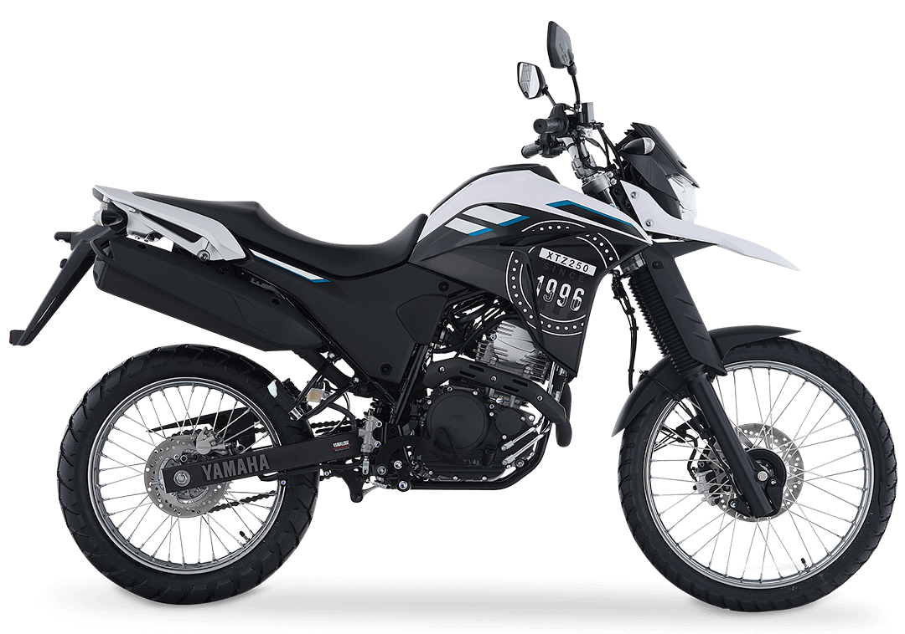

Del asfalto de Pereira a las trochas de Risaralda. Una doble propósito lista para las montañas del Eje Cafetero y para la ciudad.
Precio sugerido
$25.900.000*
*Sujeto a cambios en precios según / No incluye trámites

Diseñada para asfalto y terreno con igual desempeño.
Protectores de motor y guardabarros alto para aventura.
Recorrido amplio para absorber cualquier irregularidad.
FI para rendimiento óptimo en cualquier altitud.
Respaldo total de fábrica con técnicos certificados directamente por Yamaha Japón.
Más de 20 años liderando el mercado en Pereira con transparencia y honestidad.
Equipos de diagnóstico de última generación específicos para modelos de doble propósito.
"La XTZ 250 es perfecta para las carreteras del Eje Cafetero. Potente y confiable."
Nuestros asesores expertos están listos para guiarte en tu proceso de compra y opciones de financiamiento.